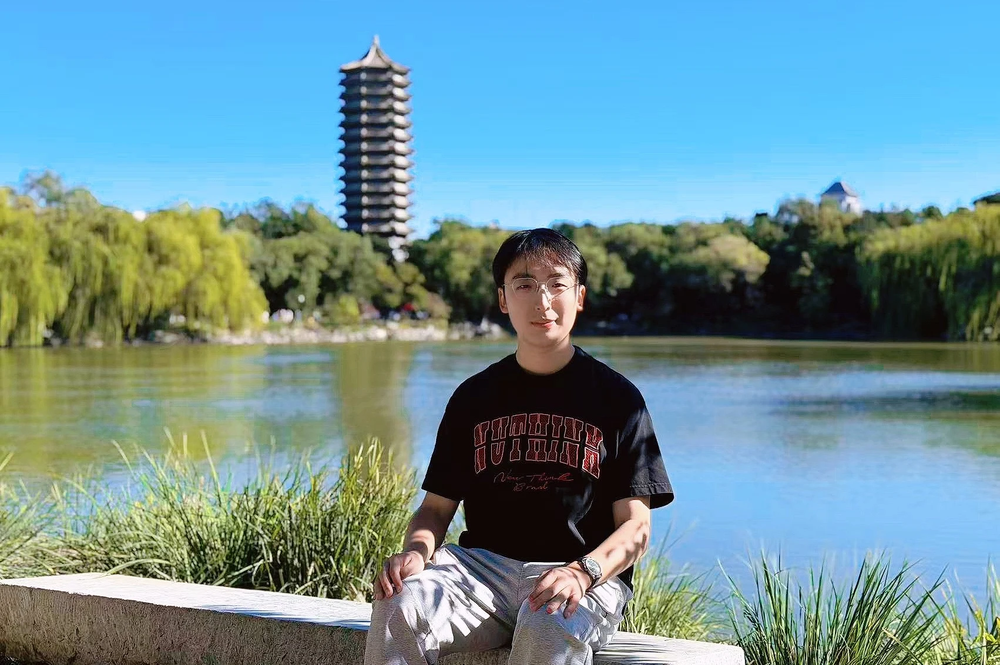

Sep 2025 – Jul 2030 · dijangka
Universiti Peking
Pelajar Doktor Kejuruteraan · Maklumat Elektronik
Pusat Pengajian Perisian dan Mikroelektronik
Latihan kedoktoran bersama Makmal Zhongguancun.
Tentang / TIANXING REN
Saya menyelidik pengkompil AI agar pelbagai algoritma AI dapat berjalan dengan betul dan cekap pada perkakasan AI baharu. Saya ingin memudahkan pengaturcaraan untuk manusia dan ejen.

Saya mengikuti pengajian Doktor Kejuruteraan di Universiti Peking melalui program bersama Makmal Zhongguancun. Saya menyelidik pengkompil AI, pengaturcaraan peringkat tile dan pengkomputeran heterogen, serta berminat dengan bahasa pengaturcaraan dan seni bina komputer yang berkaitan.
Sep 2025 – Jul 2030 · dijangka
Pelajar Doktor Kejuruteraan · Maklumat Elektronik
Pusat Pengajian Perisian dan Mikroelektronik
Latihan kedoktoran bersama Makmal Zhongguancun.
Sep 2021 – Jul 2025
Sarjana Muda Kejuruteraan · Keselamatan Siber
Pusat Pengajian Sains dan Teknologi Siber
Semasa pengajian sarjana muda, saya menjalankan kerjasama penyelidikan bersama Hua Guo.
Dis 2025 – Kini
Pelatih Sistem Pintar
Dis 2024 – Ogo 2025
Pelatih Pembangunan Perisian Sistem AI
Jul 2024 – Ogo 2024
Pelatih Perkhidmatan Keselamatan
Biasiswa Kecemerlangan Akademik
Universiti PekingAnugerah Khas, Biasiswa Pertandingan Akademik; Hadiah Kedua, Biasiswa Kecemerlangan Akademik
Universiti BeihangPelajar Cemerlang; Anugerah Khas, Biasiswa Pertandingan Akademik; Hadiah Kedua, Biasiswa Khidmat Sosial
Universiti BeihangHadiah Pertama, Biasiswa Pertandingan Akademik; Hadiah Kedua, Biasiswa Kecemerlangan Akademik
Universiti BeihangJul 2024 – Ogo 2024
Pelajar Lawatan Sekolah Musim Panas